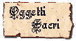
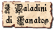
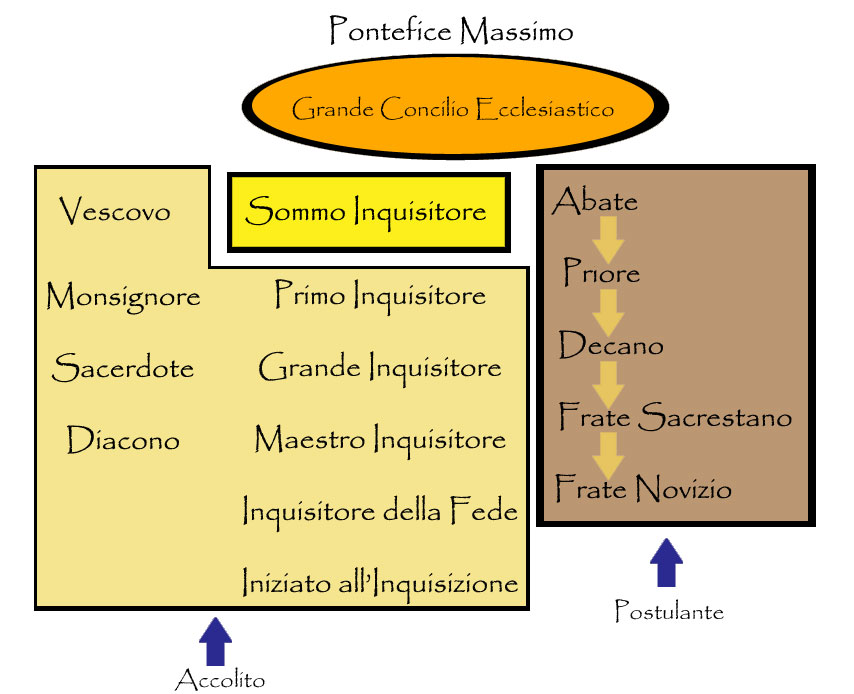

Descrizioni
raffiguranti la divinità
La figura di Tanatos è sempre circondata da una forte luce accecante. Costui è raffigurato come un uomo dalle dimensioni titaniche, sulla cinquantina, slanciato ma robusto e muscoloso, con indosso una veste bianca. Tanatos ha una lunga chioma bianca ed una folta barba altrettanto candida. In mano di solito possiede lo scettro, simbolo del suo potere fra gli dei, e nell’altra il possente e scintillante scudo dorato con l’effige della sua stella Domi.
Commenti dei giocatori
“Se
Tanatos esiste??? Certo!!! Come se ne può anche solo dubitare? Anzi ti dico di
più caro amico… io ne ho avuto le prove!!! E’ solo grazie a Tanatos se oggi
posso parlare con te… grazie a Lui sono sopravvissuto nella grande foresta del
Nord, fra tigri, orsigufi e bande di hobgoblins… al mio fianco c’è sempre
stato Tanatos e, con lui, il santo Taurus a proteggermi. Sono sicuro che mi hanno voluto
porre davanti a tali pericoli proprio per dimostrarmi quanto fossero vicini a
me… ed oggi sono grato al mio Dio. Infatti ho già fatto richiesta per entrare fra
i cavalieri a Lui devoti… spero di poterlo ripagare per avermi salvato da quell’incubo…
devo la mia vita
Tratto dal
diario di guerra di Drax Ghiòn, avventuriero e membro fondatore della Compagnia
Aurora, Tarsis 152 p.n. inflictus (Ferdinando Di Carlo)
SEMI-DEI
SEMI-DEI : Sono i più potenti seguaci della divinità, a volte considerati come vere e proprie divinità. Spesso hanno intere cappelle od addirittura singoli templi a loro consacrati. Hanno grossa influenza sulla divinità e spesso potendo disporre di potere divino sono in grado di agire direttamente su Arelia. I più conosciuti sono attualmente, TAURUS, CASSANIA ed APOLLOTIR. Secondo alcuni, inoltre, anche XENORT può essere considerato una semidivinità tanatiana, ma tale interpretazione è dai più osteggiata in quanto ufficialmente costui è stato considerato un eretico.
MINORI
ANGELI ED ARCANGELI : Messaggeri e soldati di Tanatos, creati dalla stessa divinità utilizzando le anime dei suoi più valorosi e devoti fedeli che ascendono ad una nuova forma di esistenza, sono spesso inviati a compiere missioni in nome e per conto della stessa divinità. Esiste una precisa gerarchia tra queste creature che sono suddivise in ordine di importanza decrescente tra: Arcangeli, Luci Angeliche ed Angeli Minori.
Compiti
dei chierici e
dei fedeli
E' il sacro tomo della fede tanatiana a sancire i dettami e le regole comportamentali-teologiche che i fedeli ed i chierici tanatiani devono seguire.
Organizzazione del culto su Arelia

Oltre ai chierici vi sono i Paladini, guerrieri illuminati da Tanatos e paladini di giustizia e onestà. Devono superare un allenamento mentale e fisico durissimo per diventare paladini e solo pochi riescono a superare la prova. Una volta divenuti paladini rinunziano a gran parte dei beni e si mettono a disposizione dei chierici che hanno bisogno di loro. Se effettivamente dipendono dal capo della zona che gli affida compiti e missioni e gli dona un equipaggiamento omaggio formalmente sono liberi di agire come vogliono.
Fornitura di oggetti ai paladini tanatiani
La magnificenza del Culto di Tanatos si riflette anche sulla fornitura, a spese del relativo punto di riferimento ecclesiastico, di equipaggiamento ai paladini tanatiani. A seconda del loro grado i paladini di Tanatos ottengono un determinato numero di punti equipaggiamento. Costoro, dunque, potranno richiedere alla chiesa tanatiana oggetti per un valore massimo in punti pari al doppio del loro livello di esperienza. Gli oggetti magici forniti dal culto saranno considerati nel massimale di oggetti magici che il paladino può possedere.
I punti equipaggiamento saranno considerati utilizzati fino a che il paladino resta in possesso degli oggetti richiesti. Per tale motivo qualora gli stessi si rompano o siano persi il paladino potrà effettuare una nuova richiesta con i punti equipaggiamento che non sono più utilizzati. Inoltre, in ogni momento il paladino potrà restituire gli oggetti precedentemente ottenuti per chiederne dei nuovi (dovendo, in tal caso, prima consegnare gli oggetti posseduti per poi attendere i tempi di consegna dei nuovi oggetti).
Oltre ad ottenere gli oggetti, al paladino saranno effettuate a spese del Culto le riparazioni delle corazze fornite dalla chiesa tanatiana per il possesso delle quali il paladino impegna punti equipaggiamento (non saranno, quindi, riparate gratuitamente le corazze che il paladino acquista privatamente). Tali riparazioni avverranno presso il corazziere indicato dal punto di riferimento ecclesiastico.
Si noti che tutte le eventuali spese per i permessi e le tasse di possesso degli oggetti comuni e di quelli magici che il paladino deve pagare allo Stato nel quale risiede sono interamente a carico del paladino medesimo.
I paladini possono scegliere gli oggetti dalla seguente lista (si tenga presente che i tempi di consegna sono quelli medi, alcuni vescovati minori ed alcune abbazie possono impiegare anche il doppio del tempo per effettuare la consegna):
Arma Superba (1 punto, consegna in 3d10 giorni dalla richiesta): Il paladino può ottiene un'arma di fattura superba della tipologia dallo stesso prescelta.
Mithril - Adamantio (Materiale Speciale*) (+1 punto, consegna in +1 mese dalla richiesta): Il paladino può chiedere di ottenere un'arma superba del tipo prescelto che sia stata costruita in Mithril oppure in Adamantio.
Benedizione Sacra Inferiore (Incantamento*) (+2 punti, consegna in +1d2 mesi dalla richiesta): Il paladino può chiedere di ottenere un'arma superba della tipologia dallo stesso prescelta che sia stata incantata con l'incantamento minore della benedizione sacra inferiore (500 g.p., 100 xp). (Vedi rituali)
Benedizione Sacra (Incantamento*) (+5 punti, consegna in +1d3 mesi dalla richiesta): Il paladino può chiedere di ottenere un'arma superba della tipologia dallo stesso prescelta che sia stata incantata con l'incantamento minore della benedizione sacra (1500 g.p., 250 xp). (Vedi rituali)
Benedizione Sacra Superiore (Incantamento*) (+8 punti, consegna in +2d3 mesi dalla richiesta): Il paladino può chiedere di ottenere un'arma superba della tipologia dallo stesso prescelta che sia stata incantata con l'incantamento della benedizione sacra superiore (4000 g.p., 375 xp). (Vedi rituali)
Luce Sacra (Incantamento*) (+3 punti, consegna in +1d2 mesi dalla richiesta): Il paladino può chiedere di ottenere un'arma superba della tipologia dallo stesso prescelta che sia stata incantata con l'incantamento minore della luce sacra (1000 g.p., 150 xp). Una volta al giorno il paladino potrà attivare l'arma che impugna (free action che ha effetto nel medesimo round in cui viene dichiarata con un fattore iniziativa di +1). Per 30 rounds l’arma irradierà una forte luce bianca in grado di illuminare a 9 metri di distanza. Tutte le creature non morte che si trovano all'interno dell'area illuminata dall'arma riceveranno una penalità di -1 al loro tiro per colpire. Colui che impugna l’arma non subisce alcun effetto negativo a causa della luminosità della luce. Se per qualsiasi motivo il paladino (o chi ha attivato questo potere) smette di impugnare l'arma, la stessa si spegnerà immediatamente. Questo incantamento minore non permette di colpire le creature immuni alle armi normali. Infine, deve rammentarsi che un'arma incantata con la luce sacra produce effetti solo qualora sia impugnata da una creatura che sia almeno un Devoto di Tanatos mentre non potrà essere in alcun caso attivata da chi sia solo un Registrato o non sia un fedele della divinità.
Incantamento Magico +1 (Incantamento*) (+9 punti, consegna in +2d3 mesi dalla richiesta): Il paladino può chiedere di ottenere un'arma superba della tipologia dallo stesso prescelta che sia stata incantata con l'incantamento magico in grado di farla divenire un'arma magica +1.
Incantamento Magico +2 (Incantamento*) (+15 punti, consegna in +3d6 mesi dalla richiesta): Il paladino può chiedere di ottenere un'arma superba della tipologia dallo stesso prescelta che sia stata incantata con l'incantamento magico in grado di farla divenire un'arma magica +2.
Corazza Leggera (2 punti, consegna in 3d10 giorni dalla richiesta): Il paladino può ottiene una corazza del seguente tipo: Cotta ad Anelli, Cotta a Scaglie o Maglie di Ferro. La corazza sarà di fattura normale e la classe di peso potrà essere leggera, standard o pesante a seconda della scelta del paladino.
Corazza di Piastre (5 punti, consegna in 1 mese dalla richiesta): Il paladino può ottiene una corazza del tipo Plate Mail. La corazza sarà di fattura normale e la classe di peso potrà essere leggera, standard o pesante a seconda della scelta del paladino.
Corazza di Piastre da Guerra (8 punti, consegna in 1d3 mesi dalla richiesta): Il paladino può ottiene una corazza del tipo Field Plate Mail. La corazza sarà di fattura normale e la classe di peso potrà essere leggera, standard o pesante a seconda della scelta del paladino. Si noti che il paladino dovrà restare, appena effettuata la richiesta, 18 giorni nella fucina a disposizione del corazziere senza poter effettuare altre azioni per la costruzione di tale corazza.
Bagno in Titanio (Trattamento alchemico*) (+2 punti, consegna in +1d2 mesi dalla richiesta): Il paladino può chiedere di ottenere un'armatura del tipo prescelto che sia stato sottoposta con successo ad un procedimento alchemico di bagno in titanio.
*Si noti che gli incantamenti, i materiali speciali ed i trattamenti alchemici possono essere richiesti solo su equipaggiamento fornito dalla stessa chiesa tanatiana per il quale il paladino dovrà considerare speso i relativi punti equipaggiamento. Non sarà possibile, quindi che il paladino richieda di far incantare oggetti da egli stesso forniti.
Una volta divenuti Grandi Difensori della Fede devono restituire tutti gli oggetti posseduti al loro precedente punto di riferimento ecclesiastico e perdono il diritto ad ottenere la fornitura di equipaggiamento da parte di quest'ultimo. Costoro, infatti, sono completamente liberi da vincoli e possono agire a piacimento e costruirsi una roccaforte e ordinare altri paladini per se o per zone dove sono di meno o sono richiesti.
Organizzazione
dei fedeli
Tutte le creature che non hanno abbracciato la fede tanatiana sono suddivise nelle seguenti categorie:
Infedeli : Sono considerati infedeli tutte le creature demoniache, tutte le creature la cui vita si basi sull'energia negativa (non morti) e tutti coloro che sono fedeli di una delle divinità appartenenti alle Forze Oscure.
Non Fedeli : Sono considerati "Non Fedeli" tutte le creature che non hanno abbracciato alcuna fede religiosa e tutti coloro che sono fedeli di una delle divinità appartenenti alle Divinità Neutrali
Alleati della Fede : Sono considerati Alleati della Fede tutti coloro che sono fedeli di una delle altre divinità appartenenti alla Fratellanza della Luce.
Tutti i fedeli tanatiani, invece, sono suddivisi nelle seguenti categorie:
Registrato Tanatiano : I registrati tanatiani sono numericamente i più numerosi fedeli della divinità. Possono divenire registrati gli esseri umani ed i mezzi elfi che, non avendo precedentemente abbracciato un'altra religione, una volta compiuto il sedicesimo anno di età decidono di abbracciare la fede tanatiana in assoluta spontaneità durante una cerimonia solenne che prende il nome di iniziazione tanatiana. Si tratta di un'importante decisione personale che è considerata dalla fede tanatiana irrevocabile. Al termine della cerimonia il fedele è registrato nel libro dei fedeli custodito dal Predicatore avente funzioni di Capo Culto Locale ed il suo nome, la sua data di nascita, il luogo e la data di iniziazione sono incisi su un piccolo medaglione circolare di rame che porta sull'altro lato l'effige della stella di Tanatos. Da tale momento in poi il fedele ha l'obbligo di indossare permanentemente il medaglione di registrazione e di vivere seguendo i dettami della fede tanatiana. In particolare, i registrati hanno l'obbligo di partecipare alle funzioni religiose tanatiane ivi compresa la messa che si tiene ogni X di decade. Costoro accettano di sottoporsi, inoltre, alla giurisdizione tanatiana per ciò che attiene i reati religiosi, giurisdizione accettata dal potere laico in ogni Stato che ha riconosciuto la fede tanatiana come culto religioso. La prole di almeno un registrato può essere considerata come se fosse registrata fino al compimento del sedicesimo anno di età. Ciò qualora il genitore registrato decida di inserire temporaneamente il proprio figlio tra i fedeli tanatiani. I figli dei registrati, quindi, una volta inseriti in una speciale lista del libro dei fedeli, sono considerati a tutti gli effetti registrati tanatiani. A partire dal dodicesimo anno di età, costoro seguono una volta a decade gli insegnamenti della fede tanatiana impartiti dai Predicatori della loro chiesa. Raggiunto il sedicesimo anno di età, costoro devono decidere se divenire per sempre fedeli di Tanatos sottoponendosi all'iniziazione tanatiana. Qualora tale decisione non avvenga, al compimento del diciassettesimo anno di età costoro perdono il titolo temporaneo di registrati e sono cancellati dal libro dei fedeli. Ciò non pregiudica, però, la loro futura iniziazione. Gli esseri umani ed i mezzi elfi che hanno precedentemente abbracciato una diversa fede religiosa, decidendo di adorare una diversa divinità, qualora desiderino abbandonare la propria precedente fede e divenire registrati tanatiani possono sottoporsi all'iniziazione tanatiana solo con la previa autorizzazione del Vescovo o dell'Arcivescovo del territorio.
Devoto di Tanatos : I devoti di Tanatos sono fedeli tanatiani che, dopo aver vissuto come registrati tanatiani per almeno cinque anni senza aver commesso alcun reato religioso, decidono di assumere un ruolo importante tra i fedeli tanatiani divenendo esempio di fede assoluta, di rispetto delle istituzioni ecclesiastiche e di disciplina religiosa. Si tratta di veri e propri fanatici tanatiani per i quali seguire i dettami del culto rappresenta il principale obiettivo di vita. Sono individui esaltati dalla fede religiosa che hanno abbracciato e che osservano con assolutezza i dettami religiosi. Coloro che desiderano divenire Devoti di Tanatos effettuano la loro richiesta direttamente al Vescovo (od Arcivescovo) del territorio il quale deciderà se accettarli a tale ruolo ed iniziarli durante una cerimonia solenne personale che prende il nome di sacro giuramento di devozione. Al termine della cerimonia il devoto di Tanatos è registrato nel libro dei devoti custodito dallo stesso Vescovo (od Arcivescovo) del suo territorio ed il suo nome, la sua data di nascita, il luogo e la data di iniziazione sono incisi sul simbolo sacro tanatiano, dal valore di 15 g.p. (il cui costo è a carico del devoto), che sostituisce per l'avvenire il medaglione di rame che costui indossava come registrato. Essere elevato al rango di Devoto costituisce un grande privilegio per un fedele tanatiano. Il devoto, oltre a dover rispettare i dettami della fede come ogni buon registrato tanatiano, si impegna ad ulteriori sacrifici per donare alla propria divinità maggiore potere divino diretto. Ogni devoto deve effettuare due voti della fede tanatiana, il primo a scelta tra il voto di astinenza ed il voto di castità, il secondo a scelta tra il voto di meditazione ed il voto di beneficenza. A differenza dei chierici, i devoti non acquisiscono alcun beneficio dall'aver stretto questi voti religiosi e sono tenuti a rispettarli fino a che mantengono il rango di devoto di Tanatos. I voti sono scelti pubblicamente durante la cerimonia del sacro giuramento di devozione e non possono essere più cambiati nel corso della vita del fedele (anche qualora costui perda il rango di devoto e lo riacquisti successivamente). Il devoto, inoltre, deve essere disposto ad aiutare la chiesa tanatiana gratuitamente e senza indugio in ogni occasione sia richiesto il suo intervento da parte di un qualsiasi ministro del culto. In ogni momento il Vescovo (o l'Arcivescovo) che ha iniziato un fedele al rango di Devoto, può cancellarlo dalla lista presente nel libro dei devoti facendolo retrocedere immediatamente al rango di registrato. Ciò avviene quando il Vescovo si convince che, per qualsiasi motivo, la fede del devoto non è abbastanza forte. La cancellazione è automatica se il devoto si macchia di un qualsiasi reato religioso. Una volta cancellato dalle liste, il registrato può chiedere nuovamente di divenire devoto solo dopo che siano trascorsi 2 anni dalla cancellazione, in ogni caso è assai difficile che il Vescovo della zona elevi nuovamente un registrato al rango di devoto dopo che questi ha perso tale privilegio.
L'esaltazione religiosa dei devoti permette loro di acquisire delle capacità uniche che solo i devoti tanatiani possono possedere, queste capacità dipendono dalla classe di appartenenza del fedele (i fedeli multiclasse devono scegliere uno dei benefici che desiderano ottenere, questa scelta non potrà essere in seguito modificata, gli appartenenti alle classi duali possono utilizzare unicamente il potere della classe in cui hanno il livello più alto):
Cantori di Arelia - Musica Angelica
Gli appartenenti
alla classe Cantori di Arelia che sono devoti di Tanatos conoscono una
particolare musica in grado di mettere in difficoltà e di danneggiare i non
morti. Si tratta, infatti, di un particolare brano di provenienza planare in
grado di sprigionare energia positiva che solo i Devoti Tanatiani riescono ad
eseguire alla perfezione. I Cantori devono utilizzare tutte le normali regole
per lanciarla.
Musica
Angelica - Durata Breve
Si tratta di una musica
carica di energia positiva in grado di disturbare i non morti e quando è
abbastanza potente danneggiarli. In particolare i non morti che subiscono
gli effetti di questa musica subiranno tre possibili effetti:
1) una penalità ai loro tiri per colpire;
2) una determinata percentuale di restare storditi per il dolore per tutto
il round in corso (stunned)
che deve essere verificata all'inizio di ogni round di effetto della
canzone. Si tratta, dunque, di un tiro del singolo non morto che deve essere
ripetuto all'inizio di ogni round.
3) subire danni da energia positiva alla fine di ogni round di durata della
canzone.
Si noti che questi effetti sono applicati automaticamente a tutti i non
morti che abbiano un totale di dadi vita/livelli pari od inferiore alla metà
(calcolata per difetto) del livello di esperienza raggiunto dal Cantore;
potranno invece evitare gli effetti della musica, superando un unico tiro
salvezza contro incantesimi i non morti che hanno un totale di dadi
vita/livelli compreso tra un valore superiore alla metà (calcolata per
difetto) del livello di esperienza raggiunto dal Cantore ed il suo attuale
livello di esperienza; risulteranno, infine, immuni agli effetti di questa
canzone i non morti che abbiano un totale di dadi vita/livelli superiore al
livello di esperienza del Cantore che suona la musica angelica.
| Livello della Musica | Malus Thac0 | % stordimento | Danni al round |
| Melodia Angelica | -1 | 20 % | - |
| Ballata Angelica | -1 | 25 % | 1 |
| Canzone Angelica | -2 | 30 % | 2 |
| Sinfonia Angelica | -2 | 35 % | 3 |
Warrior - Percuotere gli Infedeli
Gli appartenenti ad una delle classi warrior, ad eccezione dei paladini, che sono devoti di Tanatos ottengono la possibilità di utilizzare 1 volta al giorno ogni 2 livelli di esperienza (1 volta dal 1° al 2° livello, 2 volte dal 3° al 4° livello, 3 volte dal 5° al 6° livello, e così via) un particolare colpo di combattimento speciale che prende il nome di percuotere gli infedeli. Il potere viene recuperato interamente ogni giorno al momento di flusso di energia divina di Tanatos. Trattandosi di un colpo speciale di combattimento il guerriero dovrà selezionare di utilizzarlo su un suo attacco nella fase delle intenzioni senza dover spendere punti combattimento e non potrà utilizzare nel medesimo round altri colpi di combattimento speciali. A tale attacco, però, potranno essere aggiunti, utilizzando i richiesti punti di combattimento comprensivi dell'aggiunta del punto supplementare per il cumulo con questo colpo di combattimento speciale, eventuali colpi di combattimento generali. Se l'attacco viene abortito o manca l'avversario, il colpo di combattimento speciale si considererà in ogni caso utilizzato. Questo colpo può essere utilizzato su un qualsiasi attacco il guerriero devoto effettui, in corpo a corpo, con un'arma (od eventualmente con lo scudo) contro una creatura non morta, demoniaca od un ministro di una delle divinità delle forze oscure. Se l'attacco contro una di queste creature va a segno, questo provocherà 4 danni supplementari magici di origine divina. Trattandosi di danni magici questi potranno superare il massimale dei danni previsti dal dado dell'arma utilizzata, inoltre qualora l'attacco colpisca una creatura immune alle armi normali o magiche questa subirà in ogni caso questi danni supplementari magici di origine divina.
Wizard - Raggio di Energia Positiva
I maghi devoti possono utilizzare 1 volta al giorno ogni 3 livelli di esperienza (1 volta dal 1° al 3° livello, 2 volte dal 4° al 6° livello, 3 volte dal 7° al 9° livello, e così via) uno speciale incantesimo di evocazione di energia positiva. Il potere viene recuperato interamente ogni giorno al momento di flusso di energia divina di Tanatos. Nel lancio di questa magia non devono effettuare il tiro del Misscast, inoltre, non utilizzano alcun punto magia (non potendo modificare in alcun modo gli effetti della magia), per il resto il lancio dell'incantesimo è identico al lancio di qualsiasi magia. La conoscenza di questo incantesimo che si considera a tutti gli effetti una magia di evocazione del primo livello di potere (ad es. per quanto concerne i tiri salvezza) non dona al mago alcuna conoscenza nella scuola di evocazione. Infine va osservato che questo incantesimo non conta nel numero massimo di magie che il mago può conoscere ad ogni livello di potere e che il mago non necessita di scrivere questa magia sul proprio libro degli incantesimi né di ripassare questo incantesimo per poterlo lanciare.
Ray of Positive Energy
Range: 3 metri
+ 3 metri per livello
Components: V, S
Duration: Istantanea
Casting Time: 3
Area of Effect: One creature
Saving Throw: 1/2
Attraverso questa magia il mago evoca un raggio di energia positiva in grado di produrre unicamente ai non morti un danno pari al suo livello di esperienza + un dado che dipende dal livello di raggiunto secondo questo schema: 1d4 fino al terzo livello, 1d6 dal quarto al sesto livello, 1d8 dal settimo al nono livello, 1d10 al decimo livello ed ai successivi.
Il costo degli incantesimi
tanatiani
Non è permesso l'utilizzo di incantesimi tanatiani su coloro siano definibili infedeli.
Nell'utilizzo
degli incantesimi tanatiani i chierici ed i paladini devono seguire il seguente
ordine di preferenza (dal più importante al meno importante):
- Ministro del Culto di Tanatos (chierici e paladini) ordinati secondo il loro
rango:
- Pontefice Massimo
- Vescovo, Abate, Sommo Inquisitore,
Grande Difensore della Fede
- Primo Inquisitore, Priore
- Monsignore, Grande Inquisitore,
Decano, Paladino di IV grado
- Sacerdote, Maestro
dell'Inquisizione, Paladino di III grado
- Inquisitore della Fede, Frate
Sacrestano, Paladino di II grado
- Diacono, Iniziato all'Inquisizione,
Frate Novizio, Paladino di I grado
- Devoto di Tanatos
- Registrato Tanatiano
- Alleato della Fede
- Non Fedele
Tra individui tutti facenti parte della medesima categoria (o rango
ecclesiastico) sarà il chierico od il paladino a decidere su chi utilizzare i
propri poteri di origine divina.
Tabella del costo degli incantesimi
Si noti che tutti i Ministri del Culto di Tanatos (chierici e paladini) sono esentati dal pagamento degli incantesimi e dei poteri tanatiani.
| CATEGORIA | ORISON | 1° LIV. | 2° LIV. | 3° LIV. | 4° LIV. | 5° LIV. | 6° LIV. | 7° LIV. |
| Devoto | 6 | 24 | 50 | 125 | 275 | 400 | 1200 | 1750 |
| Registrato | 10 | 40 | 80 | 250 | 450 | 700 | 1700 | 2500 |
| Alleato | 12,5 | 50 | 100 | 300 | 600 | 1000 | 2000 | 3500 |
| Non Fedele | 15 | 60 | 120 | 350 | 750 | 1300 | 2300 | 4000 |
Incantesimi
a costo speciale
I seguenti incantesimi vedranno applicarsi un costo particolare, che differisce
dal costo comunemente effettuato in base a quanto deciso dal Grande
Concilio Ecclesiastico.
| INCANTESIMO | DEVOTO | REGISTRATO | ALLEATO | NON FEDELE |
| Benedizione Tanatiana* | 3 | 5 | -- | -- |
| Continual Light | 650 | 1000 | 1250 | 1500 |
* Il costo della Benedizione Tanatiana è indipendente dal numero di fedeli al quale l'incantesimo è lanciato.
Simboli
fondamentali del culto
Staffa
della giustizia ( Simbolo sacro )
Runa
dell’occhio
Stella
di Tanatos che splende o sullo scudo o su un amuleto
Schema
di gioco
Allineamento
Divinità
: Lawful Good
Chierici
- Predicatori
:
Qualsiasi Good
Paladini
: Lawful Good
Registrati
: Tutti tranne Evil
Devoti
Razze
permesse
Umani